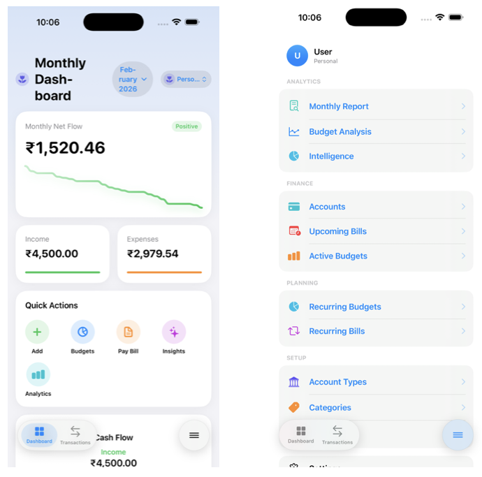
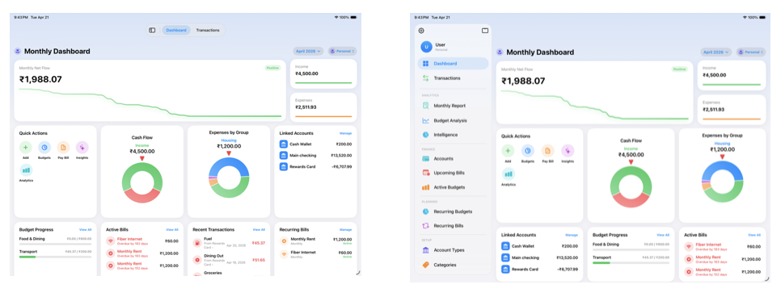
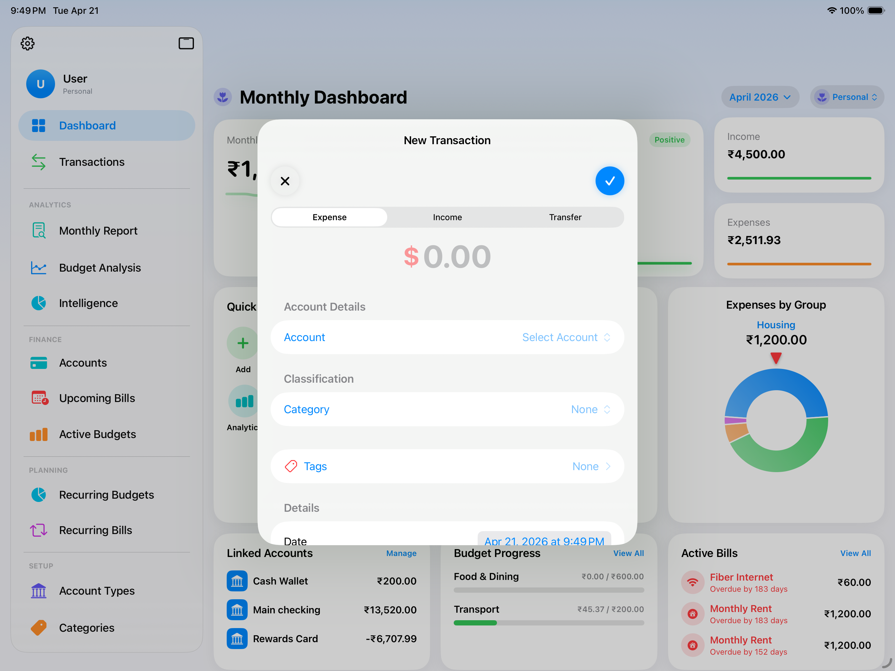
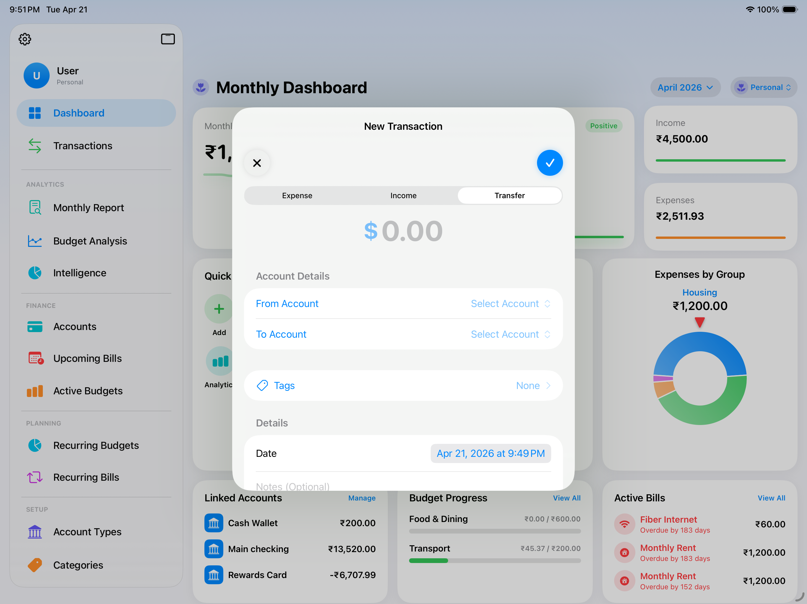
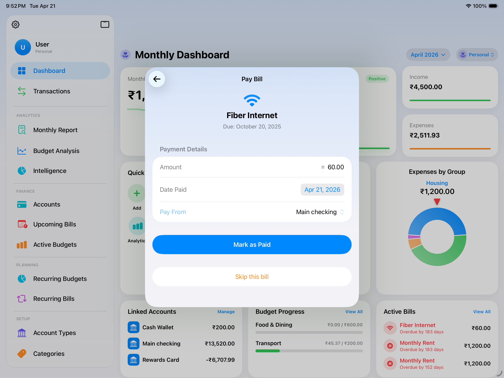
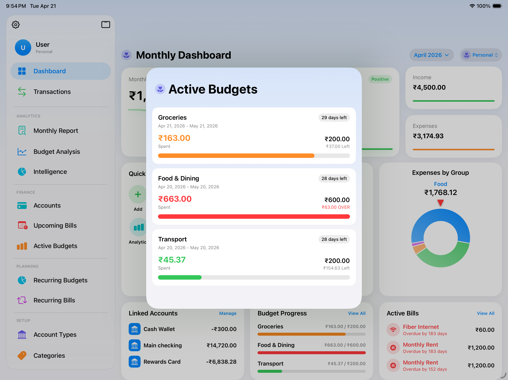
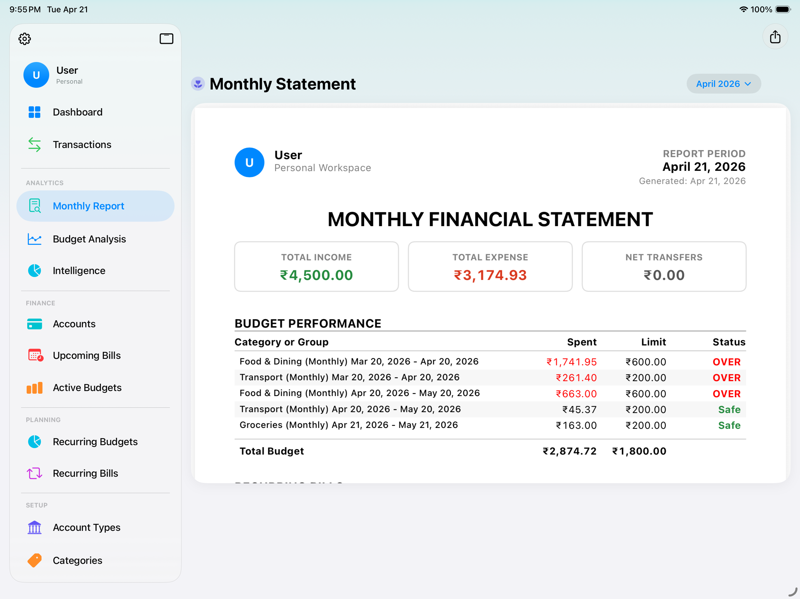
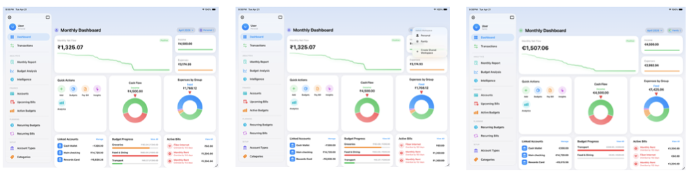
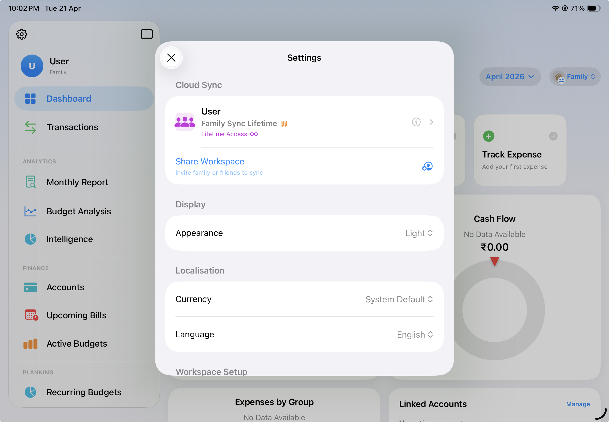

Expense mnAI
完全ユーザーガイド
1. はじめに

Expense mnAIは、Appleデバイス専用に設計された、インテリジェントでプライバシーを重視した家計管理アプリです。広告主やサードパーティの分析サービス、AppleのiCloudインフラストラクチャ以外の外部サーバーとデータを共有することなく、収入、支出、定期的な支払い、予算の健全性など、あなたの家計状況を完全に把握できるように構築されています。
Expense mnAIでできること
Expense mnAIは、お金の出入り、および口座間の移動を追跡します。給与の入金、食料品の購入、クレジットカードの支払いの違いを理解し、それぞれを整理することで、毎月のお金が実際にどこへ消えているのかを理解するのに役立ちます。
単なる追跡にとどまらず、Expense mnAIは個人財務の繰り返しの作業を自動化します。家賃、サブスクリプション、公共料金などの定期的な支払いは、期日に自動的に生成されるため、手動で記録する必要はありません。予算は毎月初めに自動的にリセットされます。また、ダッシュボードを一目見るだけで、メニューを開く前でも、純資産、今月のキャッシュフロー、主な支出カテゴリを確認できます。
Expense mnAIが選ばれる理由
- 開発者のアクセス権ゼロ。 取引内容、残高、口座情報は、あなたのデバイスと個人のiCloudアカウントのみに保存されます。開発者があなたのデータを見ることはできません。企業のサーバーがあなたの財務情報を保持することはありません。
- Apple純正の保護。 すべてはApple IDで暗号化され、iCloud経由で同期されます。写真やメッセージを保護するのと同じセキュリティインフラが、あなたの家計を守ります。
- サードパーティによる追跡なし。 Expense mnAIには、広告SDK、分析フレームワーク、データブローカーは含まれていません。あなたの財務行動がプロファイリングに使用されることはありません。
- ワークスペース。 個人の家計と共有の世帯家計を厳密に分離できます。「個人」ワークスペースはあなただけのものです。「共有」ワークスペースでは、家族やパートナーと共同で管理でき、全員が同じデータをリアルタイムで確認できます。
2. はじめに
2.1 ワークスペースの設定
Expense mnAIを初めて開くと、自動的に「個人」ワークスペースが作成されます。これはあなた専用のプライベートな財務環境であり、あなただけが閲覧でき、個人のiCloudアカウントのみに保存されます。後で共有ワークスペースに招待した人であっても、他の誰かがあなたの「個人」ワークスペースを見ることはありません。
ワークスペースとは？
ワークスペースは、独立した財務環境です。それぞれに独自の口座、カテゴリ、取引、予算、支払いが設定されています。帳簿のセットが分かれていると考えてください。「個人」ワークスペースにはあなたの個人の財務が含まれます。「共有」ワークスペースには、誰かと一緒に管理する世帯の支出や収入を含めることができます。
共有ワークスペースの作成
共有ワークスペースには「ファミリー共有プラン」が必要です。作成するには、画面上部のワークスペース名をタップしてワークスペースセレクターを開き、「共有ワークスペースを作成」をタップします。名前の入力を求められます。作成後、他の人を招待できます（詳細はセクション10.4を参照）。
ワークスペースの切り替え
画面上部のワークスペース名またはアバターをいつでもタップして、利用可能なワークスペースを表示し、切り替えることができます。アプリは最後に使用したワークスペースを記憶します。
2.2 デフォルトデータと初回起動
初回起動時、Expense mnAIは一般的な財務モデルに基づいた口座タイプ、カテゴリグループ、カテゴリのセットを「個人」ワークスペースに事前に設定します。これらはあくまで開始点であり、組み込みのシステムタイプを除き、すべて追加、編集、削除が可能です。
デフォルトの口座タイプ： 現金、普通預金、貯蓄、クレジットカード、投資、ローン。
デフォルトのカテゴリグループとカテゴリ
| グループ | カテゴリ |
|---|---|
| 飲食 | 食料品、外食 |
| 交通 | 燃料費、公共交通機関 |
| 住居 | 家賃 / ローン |
| 公共料金 | 電気、インターネット |
| エンタメ | （独自のカテゴリを追加） |
| 給与 | 基本給、ボーナス |
| 投資 | （独自のカテゴリを追加） |
| フリーランス | （独自のカテゴリを追加） |
| ギフト | （独自のカテゴリを追加） |
| その他収入 | （独自のカテゴリを追加） |
「学費」「ペット用品」「副業」など、あなたの実生活を反映したカテゴリを追加することをお勧めします。
2.3 インターフェースとナビゲーションガイド
Expense mnAIは、デバイスに合わせて適応するフローティングナビゲーションバーを使用しています。

iPhone（ポートレート）： 画面下部にピル型のバーが浮かんでおり、「ダッシュボード」と「取引」の2つの固定タブと、右側にメニューボタンがあります。メニューボタンをタップすると、すべてのセクションにアクセスできるフルスクリーンのナビゲーションパネルが開きます。

iPadおよびMac： 上部にコンパクトなフローティングバーがあります。左側のアイコンをタップするとフルサイドバーに展開され、すべてのナビゲーションセクションが表示されます。サイドバーは、移動先を選択すると自動的に閉じます。
主要セクション：
| セクション | 内容 |
|---|---|
| ダッシュボード | 純資産、月間キャッシュフロー、今後の支払い、予算の概要 |
| 取引 | アクティブなワークスペースのすべての収入、支出、振替 |
| 口座 | 保有口座とその残高 |
| 月間レポート | 月ごとの履歴の内訳 |
| 予算分析 | 予算パフォーマンスの視覚的な内訳 |
| インテリジェンス | AIによって生成された支出の洞察とパターン |
| 今後の支払い | 今後30日以内に期限が来る支払い |
| 現在の予算 | 今月の予算追跡 |
| 定期的な支払い | 支払いテンプレートの管理 |
| 定期的な予算 | 予算テンプレートの管理 |
| 口座タイプ | 口座タイプのラベル管理 |
| カテゴリ | 支出カテゴリの管理 |
| カテゴリグループ | グループコンテナの管理 |
| 設定 | 通貨、言語、外観、サブスクリプション |
3. 口座
3.1 口座タイプについて
口座タイプは、普通預金、貯蓄、クレジットカードなど、財務口座の性質を表すラベルです。口座タイプは計算には影響しません。整理と表示のために存在します。Expense mnAIには、現金、普通預金、貯蓄、クレジットカード、投資、ローンの6つのデフォルトタイプが用意されています。デフォルトが当てはまらない場合は、「仮想通貨ウォレット」や「予備費」など、独自のカスタムタイプを作成できます。
3.2 口座の作成と管理
口座は、ワークスペース内の財務上のコンテナです。すべての取引は少なくとも1つの口座に関連付けられている必要があります。お金が出た口座、お金が入った口座、または振替の場合はその両方です。
口座の作成： メニューから「口座」に移動し、＋ボタンをタップし、名前（例：「みずほ銀行」）を入力し、口座タイプを選択し、必要に応じて開始残高と日付を入力して「保存」をタップします。
口座の編集： 口座をタップして詳細ビューを開き、「編集」をタップします。名前、タイプ、メモ、デフォルトのメイン口座設定を変更できます。
メイン口座の設定： 1つの口座をデフォルトとして設定できます。この口座は取引入力画面を開いた際にあらかじめ選択されるため、最も頻繁に使う口座を選択する手間が省けます。
口座の非表示（ソフトデリート）： 取引履歴がある口座を完全に削除する代わりに、非表示に設定できます。非表示の口座はアクティブなリストからは消えますが、正確なレポート作成のために取引履歴は保持されます。
3.3 開始残高
既存の口座をExpense mnAIに追加する際、特定の日付における既存の残高を入力できます。これが開始残高です。Expense mnAIはこれを開始点とし、その日付以降の収入を加算し支出を減算することで現在の残高を計算します。Expense mnAIを初めて設定し、すでに口座にお金がある場合は、開始残高を今日の日付の現在の残高に設定してください。
4. カテゴリとグループ
4.1 カテゴリシステムについて
Expense mnAIは、取引を整理するために「グループ」と「カテゴリ」の2層システムを使用しています。グループは、「飲食」や「交通」などの広範なコンテナです。カテゴリは、「食料品」や「燃料費」など、グループ内の特定の項目です。各取引はグループとカテゴリの両方に割り当てることができ、どちらのレベルでも支出の概要を確認できます。
この2層構造により、「今月は食費に10万円使った」ことを確認できると同時に、「6万円は食料品、4万円は外食」といった詳細まで掘り下げることができます。グループにはタイプもあり、支出グループか収入グループのいずれかになります。これにより、そのグループに割り当てられた取引がレポートでどのように解釈されるかが決まります。
4.2 カスタムグループの作成
メニューから「カテゴリグループ」に移動し、＋ボタンをタップし、名前を入力し、SF Symbolsライブラリからアイコンを選択し、「支出」または「収入」を選択して「保存」をタップします。カスタムグループはデフォルトのものと並んで表示され、すぐに使用できます。
4.3 カスタムカテゴリの作成
メニューから「カテゴリ」に移動し、＋ボタンをタップし、名前を入力し、アイコンを選択し、そのカテゴリが属するグループを選択して「保存」をタップします。カテゴリは必ずグループに属する必要があります。グループによってカテゴリのタイプ（支出または収入）が決まります。
4.4 お気に入り
カテゴリとグループはどちらもお気に入りに設定できます。お気に入りは取引入力時の選択リストの最上部に表示されるため、頻繁に使用する項目を素早く選択できます。カテゴリまたはグループを長押しして「お気に入りに追加」を選択してください。
5. 取引
5.1 支出の記録
支出は、あなたの口座からお金が出ていくことを記録します。

支出の追加： ＋ボタン（ダッシュボードおよび取引画面で表示）をタップし、「支出」を選択し、金額を入力し、日付を選択し、お金が出る口座（「支払い元」）を選択し、グループとカテゴリを選択し、必要に応じてメモ/タグ/領収書を追加して「保存」をタップします。口座残高にすぐに反映されます。
5.2 収入の記録
収入は、給与、フリーランスの報酬、現金ギフトなど、口座にお金が入ることを記録します。＋ボタンをタップし、「収入」を選択し、金額を入力し、お金が入った口座（「入金先」）を選択し、収入グループとカテゴリを選択し、必要に応じてメモを追加して「保存」をタップします。
5.3 口座間の振替

振替は、普通預金からクレジットカードの支払いを行うなど、自分自身の口座間での資金移動を記録します。＋ボタンをタップし、「振替」を選択し、金額を入力し、元の口座（「支払い元」）と宛先の口座（「入金先」）を選択し、日付を選択し、メモを追加して「保存」をタップします。振替は総純資産には影響しませんが、各口座の残高に影響します。
5.4 領収書の添付
取引に写真やPDFの領収書を添付できます。取引を保存した後、その取引を開いて「領収書を追加」をタップします。新しく写真を撮るか、ライブラリから既存の画像を選択できます。領収書はデバイスに保存され、他のデータと共にiCloudに同期されます。
5.5 タグ
タグは、グループ/カテゴリシステム以外で自由に付けられるラベルです。例えば、複数の取引に「2025年休暇」や「事務用品」などのタグを付けられます。タグを追加するには、取引の入力または編集時にタグフィールドをタップして新しいタグ名を入力するか、既存のタグを選択します。
5.6 取引の編集と削除
リスト内の取引をタップして開きます。詳細ビューで「編集」をタップして変更を加えます。取引を削除するには、リストで取引を左にスワイプして「削除」をタップするか、取引を開いて削除ボタンをタップします。削除された取引は完全に消去され、復元はできません。
6. 定期的な支払い
6.1 定期的な支払いの仕組み
定期的な支払いは、自動化された取引テンプレートです。名前、金額、頻度、カテゴリ、元の口座を一度設定すれば、Expense mnAIは各期日に保留中の支払いエントリを生成します。支払いはまず「保留中」の状態で生成されます。それを「今後の支払い」で確認し、実際にお金が口座から出た時点で「支払い済み」としてマークします。
6.2 定期的な支払いの作成
メニューから「定期的な支払い」に移動し、＋ボタンをタップし、支払い名を入力し、取引タイプ（支出または収入）を選択し、頻度（毎週、毎月、四半期、または毎年）を設定し、開始日を設定し、必要に応じてデフォルト金額を入力し、カテゴリ/グループ/元の口座を割り当て、必要に応じて終了日を設定して「保存」をタップします。
6.3 支払い履歴の管理
生成された各支払いはインスタンスとなります。定期的な支払いのテンプレートを開くと、すべてのインスタンスを確認できます。テンプレートに影響を与えずに特定のインスタンスだけを変更するには、そのインスタンスを開いて金額、日付、またはメモを編集します。発生しなかった支払いなどを飛ばす場合は、「支払い済み」ではなく「スキップ」としてマークしてください。
6.4 支払い済みとしてマークする

メインメニューから「今後の支払い」に移動します。今後30日以内に期限が来る支払いがリストされます。支払いをタップして「支払い済みとしてマーク」を選択して支払いを確定します。実際の金額がデフォルトと異なる場合は調整可能です。支払い済みとしてマークされると、そのインスタンスは履歴に対応する取引を作成します。
7. 定期的な予算
7.1 予算の仕組み
定期的な予算は、自動的にリセットされる支出目標です。名前、金額、頻度、対象となるカテゴリまたはグループを一度設定すれば、Expense mnAIは各サイクルの開始時に新しい予算期間を自動的に生成します。手動でリセットする必要はありません。
7.2 予算の作成
メニューから「定期的な予算」に移動し、＋ボタンをタップし、名前を入力し、頻度（毎週、毎月、四半期）を設定し、予算金額を入力し、開始日（通常は今月の1日）を設定し、範囲を割り当て（1つ以上のカテゴリグループまたは特定のカテゴリ。全支出に適用する場合は空欄）、必要に応じて「残高の繰り越し」を有効にして「保存」をタップします。
7.3 残高の繰り越し（Carry-Forward）
残高の繰り越しが有効な場合、期間終了時に残った未使用分が次の期間の予算に加算されます。例えば、食費の予算が5万円で4万円しか使わなかった場合、翌月は6万円（基本5万円 ＋ 繰り越し1万円）からスタートします。
7.4 予算の健全性の追跡

「現在の予算」セクションとダッシュボードには、現在の予算状況（割り当て額、これまでの支出額、残り残高、色分けされたプログレスバー）が表示されます。予算分析（セクション8.2）では、より詳細な履歴を確認できます。
8. レポートと分析
8.1 月間レポート

月間レポートでは、過去の任意の月の詳細な財務内訳を確認できます。メインメニューの「月間レポート」からアクセスしてください。総収入、総支出、純キャッシュフロー、グループ別支出（視覚的なグラフ）、カテゴリ別支出、月末の口座残高、および高額支出が表示されます。ナビゲーション矢印を使用して、過去の月間を移動できます。
8.2 予算分析
予算分析では、定期的な予算の達成状況を履歴として確認できます。予算ごとに、期間ごとのパフォーマンス（目標内/目標外）、目標に対する平均支出額、最高/最低月、トレンドラインを確認できます。これにより、高すぎたり低すぎたりする予算目標を特定し、支出の傾向を把握するのに役立ちます。
8.3 インテリジェンスと洞察
インテリジェンスセクションでは、取引履歴を使用してパターン、異常、提案を自動的に表示します。支出習慣、純資産の推移、支出が多い日、カテゴリの偏り、キャッシュフロー予測を分析し、週間の概要を提供します（通知の許可が必要です）。すべての洞察はデバイス上でローカルに生成され、サーバーにデータが送信されることはありません。
9. 同期とiCloud
9.1 同期プランの概要
| プラン | 内容 |
|---|---|
| 無料 | 1台のデバイスでアプリのフル機能を使用可能。ローカル保存のみ。iCloud同期なし。 |
| シングル同期 — 月払い / 年払い | 「個人」ワークスペースを、同じApple IDでログインしているすべてのAppleデバイス間で同期します。 |
| シングル同期 — 買い切り | シングル同期と同じ機能を、追加料金なしで永続的に利用できます。 |
| ファミリー共有 — 月払い / 年払い | シングル同期の全機能に加え、共有ワークスペースの作成と他のユーザーの招待が可能です。 |
| ファミリー共有 — 買い切り | ファミリー共有と同じ機能を、追加料金なしで永続的に利用できます。 |
9.2 プランの選び方
無料 – 1台のデバイスのみで使用する場合。
シングル同期 – 自分だけの「個人」ワークスペースを複数のAppleデバイスで使用する場合。
ファミリー共有 – シングル同期の機能に加え、他の人とワークスペースを共有したい場合。
買い切りプラン – 月額料金を払わず、一度の支払いで機能を永続的に使用したい場合。
9.3 デバイス間同期
シングル同期またはファミリー共有プランが有効な場合、「個人」ワークスペースは同じApple IDを使用するすべてのAppleデバイス間で自動的に同期されます。変更は数秒でアップロードされ、他のデバイスは30〜60秒以内に変更をダウンロードします。競合が発生した場合は、最新の編集が優先されます。
9.4 新しいデバイスの追加
新しいデバイスにアプリをインストールし、同じApple IDでログインし、プランを購入（または復元）します。サブスクリプションが確認されると、新しいデバイスは自動的に既存のデータをiCloudからダウンロードします。1〜2分以内に、すべての口座、取引、予算、支払いが表示されます。
9.5 購入の復元
再インストール後や新しいデバイスでサブスクリプションを復元するには、設定 → サブスクリプションとプラン → 購入を復元 へ進み、求められたらApple IDでログインしてください。買い切りプランは、同じApple IDを使用しているすべてのデバイスで再アクティブ化されます。復元後に同期が開始されない場合は、iCloudから一度サインアウトして再度サインインし、もう一度「購入を復元」を試してください。
10. ワークスペースとコラボレーション
10.1 ワークスペースの概要

ワークスペースは、完全に隔離された財務環境です。Expense mnAIは2つのタイプをサポートしています。個人ワークスペース（プライベート、個人のiCloudデータベースに保存）と共有ワークスペース（共同管理、共有iCloudデータベースに保存）です。ワークスペースセレクター（画面上部の名前/アバターをタップ）からいつでも切り替えが可能です。
10.2 個人ワークスペース
個人ワークスペースは初回起動時に自動的に作成されます（花のアイコンで識別）。これはあなたのプライベートなiCloudデータベースにのみ保存されます。共有ワークスペースに招待した他のユーザーがあなたの個人ワークスペースにアクセスすることはできません。削除、名前の変更、譲渡はできません。
10.3 共有ワークスペース
共有ワークスペースにはファミリー共有プランが必要です。世帯の収入/支出を一緒に追跡したり、共通の予算を管理したり、支払いを共有したりするために使用します。招待されたすべてのメンバーは、同じデータをリアルタイムで確認でき、完全な読み取り/書き込みアクセス権を持ちます。所有者のファミリープランが期限切れになっても、所有者が明示的にアクセス権を取り消さない限り、ワークスペースは参加者に表示され続けます。
10.4 他のユーザーの招待

要件： ファミリー共有プランに加入しており、ワークスペースがすでにiCloudに同期されていること。招待を送信するには：ワークスペースセレクターを開き、共有ワークスペースの横にある共有アイコンをタップします（またはワークスペース設定 → 「ユーザーを招待」へ進みます）。iCloud共有シートが表示されるので、メッセージ、メール、AirDropなどで招待リンクを共有します。受信者がリンクをタップし、システムの参加プロンプトを承諾すると参加完了です。
10.5 ワークスペースへの参加
Expense mnAIがインストールされているiPhone、iPad、またはMacで招待リンクを開きます。「[ワークスペース名]に参加しますか？」というシステムプロンプトが表示されるので、「参加」をタップします。数秒以内にワークスペースセレクターに表示されます。すぐに表示されない場合は、アプリを一度閉じて再度開き、最大1分ほどお待ちください。共有ワークスペースに参加するために有料プランに加入する必要はありません。
10.6 コラボレーターの管理
ワークスペースの所有者は、ワークスペースセレクターから共有シートを開き、参加者の名前をタップして「アクセス権を削除」を選択することで、コラボレーターを削除できます。参加者は即座にアクセス権を失います。参加者は、共有シートを開いて「参加を中止」をタップすることで、共有ワークスペースから退出できます。
11. プライバシーとセキュリティ
Expense mnAIは、Appleのセキュリティインフラストラクチャの上に完全に構築されています。Expense mnAIを開発する企業のサーバーがあなたの財務データの保存や送信に関与することはありません。
- ローカル保存： 無料プランのデータは、暗号化されたSQLiteデータベースとしてデバイス内にのみ存在します。
- iCloud同期： 同期が有効な場合、データはAppleのiCloudサーバーを経由し、転送中および保存時に暗号化されます。
- 開発者のアクセス権： 開発者があなたのデータを確認する手段はありません。管理ポータルも、データベースの書き出しも、分析パイプラインも存在しません。
- 広告なし： アプリには広告SDKは含まれておらず、広告のターゲティングやリターゲティングシステムにも参加していません。
- iCloudアカウントの変更： iCloudからサインアウトして別のユーザーとしてサインインした場合、アプリはその変更を検出し、前のユーザーのデータを保護するためにローカルデータベースを消去します。
12. よくある質問
インターネットに接続していなくてもExpense mnAIを使用できますか？
はい。すべての基本機能はオフラインで完全に使用可能です。変更内容は、次にオンラインになった際に他のデバイスと同期されます。
Macでも動作しますか？
はい。Expense mnAIはMac Catalystを通じてMacでも利用可能で、iPhoneやiPadと同じように動作します。
サブスクリプションを解約するとデータはどうなりますか？
データはデバイスに残ります。同期機能にはアクセスできなくなりますが、既存のデータが削除されることはありません。
所有者がファミリープランを解約した場合、共有ワークスペースはどうなりますか？
Appleが共有リソースを維持している限り、参加者はiCloud共有インフラストラクチャを通じて共有ワークスペースにアクセスし続けることができます。
個人ワークスペースを複数持つことはできますか？
いいえ。個人ワークスペースは1つのiCloudアカウントにつき1つだけです。代わりに、複数の共有ワークスペースを作成することができます。
取引が同期されません。何を試すべきですか？
インターネット接続を確認し、iCloudへのサインインを確認し、アプリの設定でサブスクリプションが有効であることを確認してください。機内モードを一度オンにしてからオフにし、強制的に同期を試みてください。問題が解決しない場合は、サポートにお問い合わせください。
2人で1つの個人ワークスペースを共有できますか？
いいえ。個人ワークスペースは設計上プライベートなものです。共同管理が必要な場合は共有ワークスペースを作成してください。
追加できる取引数に制限はありますか？
いいえ。取引数、口座数、カテゴリ数に人為的な制限はありません。
Expense mnAIは複数の通貨をサポートしていますか？
はい。各ワークスペースには独自の通貨設定があります。現在、ワークスペースをまたいだ複数通貨のレポート作成はサポートされていません。
サポートへの問い合わせ方法は？
設定 → ヘルプとサポート へ進むか、App Storeにリンクされているサポートページにアクセスしてください。問題を報告する際は、デバイスのモデルとiOSのバージョンを併記してください。
Expense mnAI — 安心・安全なあなたのための財務設計パートナー。